Ph.D. in Computer Science and Engineering
University of Notre Dame ↗My dissertation research focused on designing identity-preserving synthetic iris generative models, non-linear texture deformation architectures, and presentation attack detection.
Deep Learning · Computer Vision · Iris Biometrics
Hello! I'm Siamul Karim Khan, a Software Engineer at Google on the Ads Integrity team.
I completed my Ph.D. in Computer Science and Engineering at the University of Notre Dame, where I conducted research at the Computer Vision Research Laboratory (CVRL) advised by Prof. Adam Czajka.
My research focuses on deep learning architectures to advance iris biometrics and presentation attack detection.
Earlier, I interned at Meta during the summers of 2024 and 2025, and received my B.Sc. in CSE from Bangladesh University of Engineering and Technology (BUET).
Welcome to my personal site — feel free to explore my research, CV, music, and ways to get in touch!
Academic foundations, research labs, and doctoral dissertation details.
My dissertation research focused on designing identity-preserving synthetic iris generative models, non-linear texture deformation architectures, and presentation attack detection.
Graduated with honors from BUET, completing an undergraduate thesis on Pragmatic Probabilistic Principal Component Analysis (PPCA) for large-scale datasets.
Deep learning architectures, generative synthesis, presentation attack detection, and biometric security.
Synchronized weekly via automated decoupled CI/CD crawler with monotonic validation.
arXiv preprint arXiv:2605.20735 / Under revision at IEEE Transactions on Biometrics, Behavior, and Identity Science (T-BIOM)
IREX (Iris Exchange) evaluation programs present steep engineering barriers because academic algorithms must be compliant with strict C++ APIs and runtime constraints. We provide the first comprehensive, IREX X-compliant open-source ecosystem, open-source ArcIris and TripletIris baseline matchers, newly trained segmentation models, and standardized benchmarks across eight diverse datasets.
IEEE Transactions on Biometrics, Behavior, and Identity Science (T-BIOM)
Biometric fairness and demographic neutrality are imperative for deployed security systems. This study investigates whether modern deep learning and hand-crafted iris presentation attack detection (PAD) algorithms exhibit disparate error rates across male and female demographic groups.
IEEE Transactions on Biometrics, Behavior, and Identity Science (T-BIOM)
Synthetic biometric generation faces the critical challenge of identity preservation across multiple intra-class acquisitions. We present EyePreserve, an identity-preserving iris synthesis framework leveraging generative adversarial networks and diffusion models to produce high-fidelity synthetic eye images with controllable pupil dynamics, illumination variations, and consistent iris identity templates.
arXiv preprint arXiv:2511.09749
Training robust iris recognition models requires extensive data diversity. We propose a gradient-guided latent space exploration method that systematically perturbs generative latent vectors to synthesize controlled variations in pupil size, occlusion, and lighting while strictly preserving subject biometric identity.
2025 IEEE International Joint Conference on Biometrics (IJCB)
LivDet-Iris 2025 evaluates state-of-the-art iris presentation attack detection (PAD) algorithms against sophisticated physical and digital attack vectors, including textured contact lenses, prosthetic eyes, printed artifacts, and generative deepfake syntheses across multiple sequestered test datasets.
Notre Dame Computer Vision Research Laboratory (CVRL)
An official open-source repository establishing standardized baseline algorithms, feature extractors, segmentation networks, and reproducibility benchmarks for contemporary iris biometrics research.
U.S. Patent Application 18/625,685 (Publication No. US 2024/0334008 A1)
Methods, apparatus, and non-transitory computer readable media for biometric liveness detection and presentation attack mitigation via spatial-temporal feature decomposition and optical reflectance analysis.
U.S. Patent Application 18/115,414 (Publication No. US 2023/0274582 A1)
Systems, methods, and computer-readable media for automated, remote non-contact deception detection utilizing multimodal computer vision frameworks, facial micro-movement analysis, and remote physiological signal extraction from video streams.
Proceedings of the IEEE/CVF Winter Conference on Applications of Computer Vision (WACV)
Pupil dilation and constriction induce non-linear, non-elastic deformations in human iris textures, degrading biometric recognition accuracy. We propose DeformIrisNet, a deep learning architecture that directly models pupil-dynamics-induced iris texture deformations while strictly preserving biometric identity. DeformIrisNet outperforms classical rubber-sheet linear normalization models across multiple benchmark datasets.
IEEE Transactions on Biometrics, Behavior, and Identity Science (T-BIOM)
Automated deception detection from video streams is a challenging problem with significant security and legal applications. We present a novel, publicly available multimodal dataset for deception detection comprising synchronized high-resolution video and physiological monitoring signals. We establish baseline experimental results demonstrating the utility of remote photoplethysmography (rPPG) and facial action units for deception prediction.
Advances in Knowledge Discovery and Data Mining (PAKDD 2021), LNCS vol 12712, Springer
Conveying abstract emotional connotations through visual photography is challenging. We introduce PhotoStylist, a cross-modal deep learning framework that alters the photographic style (color tones, lighting, contrast) of target images based on the connotation of accompanying textual captions.
IEEE/ACM International Conference on Advances in Social Networks Analysis and Mining (ASONAM)
Background music selection for user-generated multimedia posts on social media requires understanding subtle emotional connotations beyond literal visual objects. We present CaMR, a connotation-aware music retrieval model that maps visual semantics and latent affective signals to relevant musical acoustic features, significantly outperforming traditional content-based retrieval baselines.
2019 International Conference on Signal Processing, Information, Communication & Systems (SPICSCON)
Cricket bowling action classification is a critical component for automated sports analytics, broadcast enhancement, and biomechanical legality assessment. This paper presents a convolutional neural network (CNN) framework using transfer learning on pre-trained deep architectures (including VGG16) to accurately classify bowlers based on sequential video frames and kinematic delivery actions.
Proficiencies across languages, deep learning frameworks, databases, and engineering tools.
Academic distinctions, competitive fellowships, and merit scholarships.
University of Notre Dame
FellowshipBangladesh University of Engineering and Technology (BUET) · 2nd and 4th Year
Academic HonorBangladesh University of Engineering and Technology (BUET)
Merit ScholarshipBangladesh University of Engineering and Technology (BUET)
StipendThe Daily Star
National DistinctionThe Daily Star
National DistinctionComprehensive academic resume, professional experiences, and research dossier.
Download the full resume above, or read through it in the preview below:
Leadership in student associations and community welfare initiatives.
Moments from cultural celebrations, student mentoring, and community gatherings with BDSA-ND.
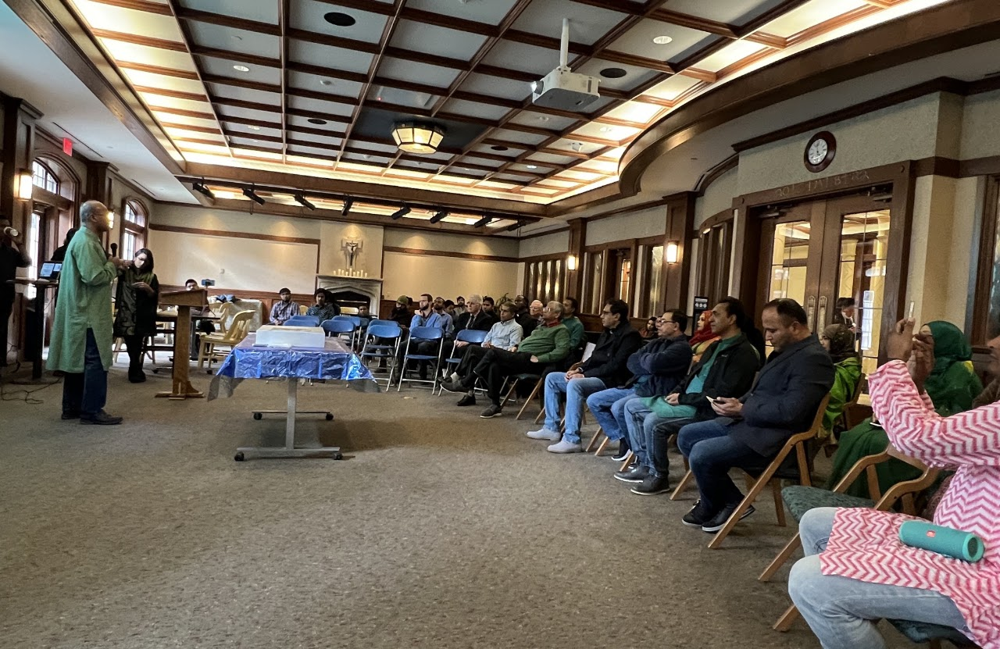
Highlights from youth outreach, educational workshops, and community welfare programs across Bangladesh.
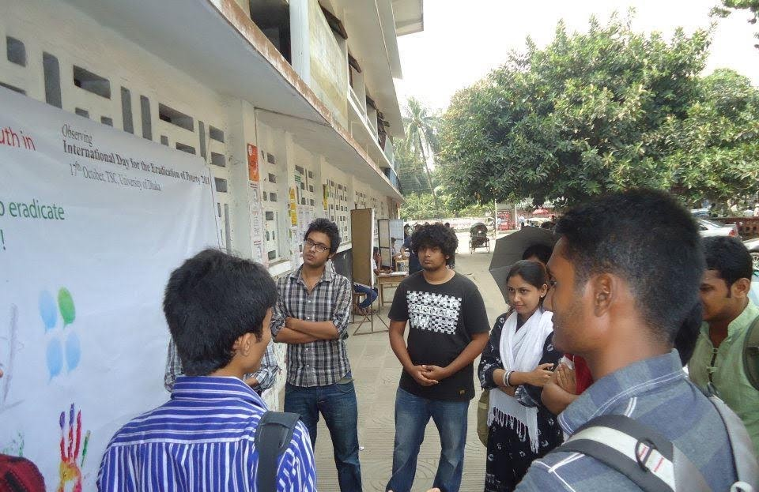
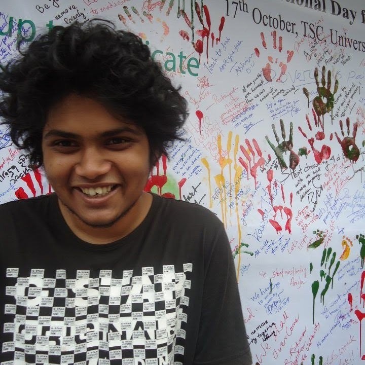
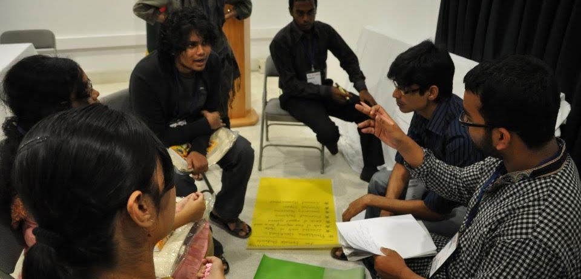
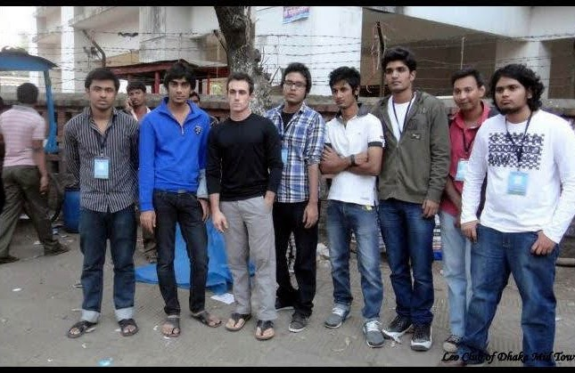
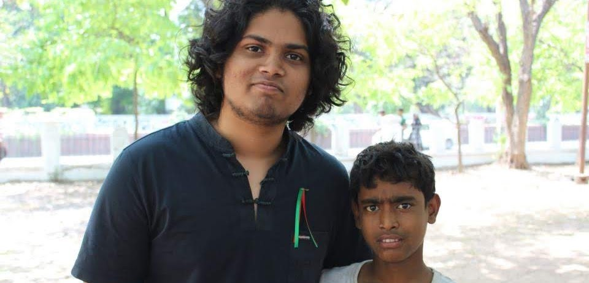
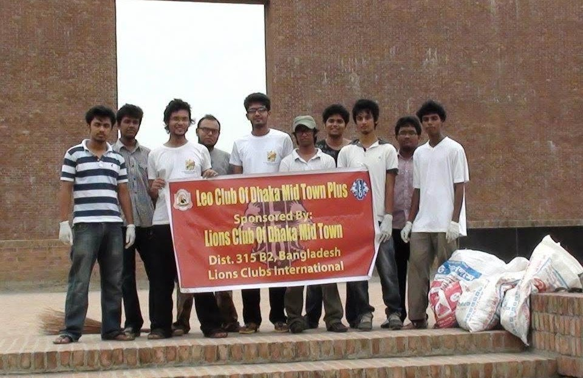
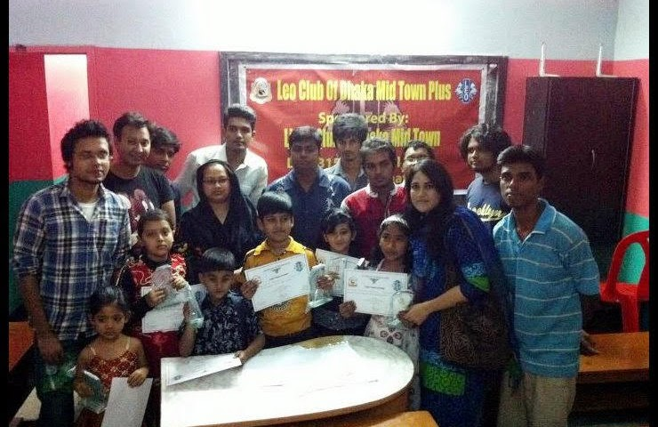
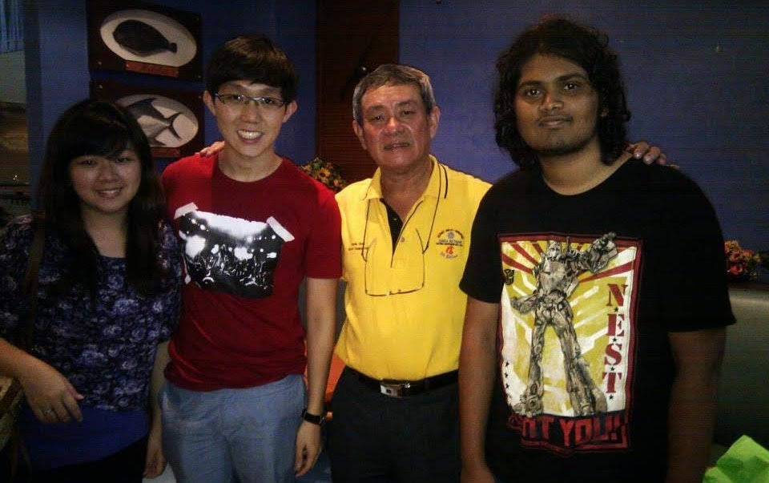
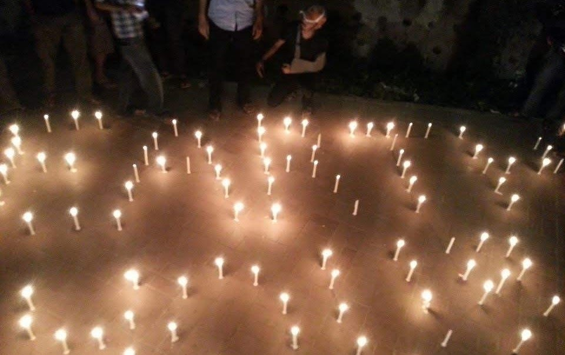
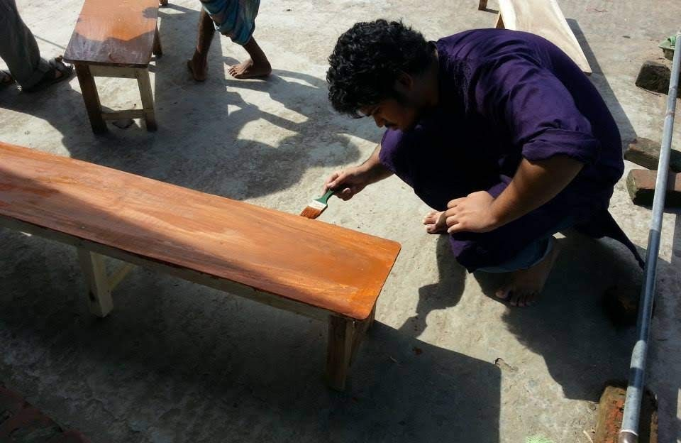
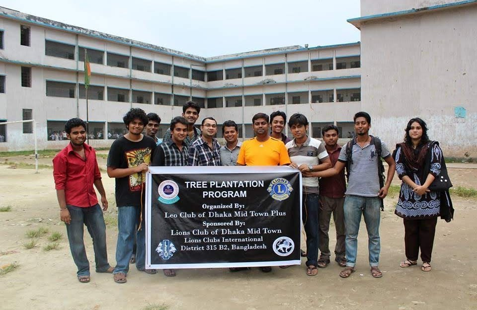
I love playing acoustic guitar and ukulele, and recording vocal covers of songs I enjoy. You can watch my performances on YouTube or listen on SoundCloud below.
Feel free to reach out for research inquiries, collaborations, or just to say hello.